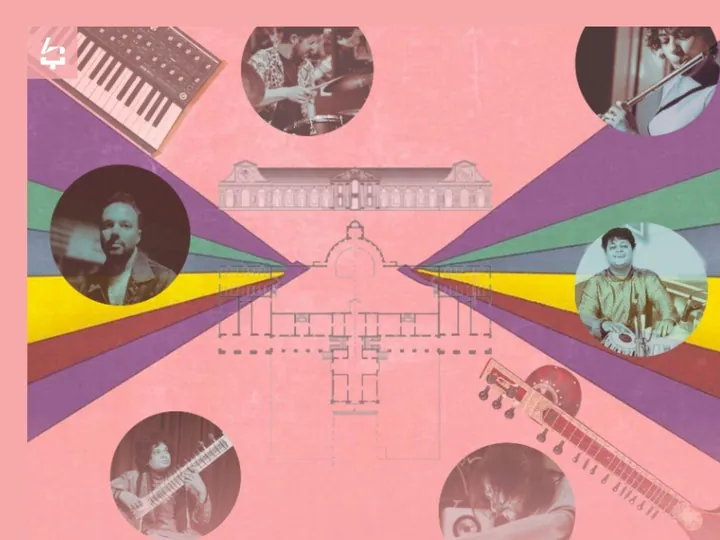

sab 17 ott
Alchimie in Villa di Maser
Il compositore, produttore e chitarrista Isaac de Martin / IKE incontra i maestri della musica classica indiana Deobrat Mishra al sitar e Prashant Mishra alle tabla.
 Indicazioni
Indicazioni
- Costi e prenotazioni
- Costo non indicato · Prenotazione non indicata
- Programma
- Programma da verificare. Apri la fonte ufficiale per orari e possibili aggiornamenti.
- In caso di maltempo
- Nessuna indicazione specifica pubblicata.
- Note
- Acquisito automaticamente dalla fonte.
L’EVENTO
Descrizione completa
Il compositore, produttore e chitarrista Isaac de Martin / IKE incontra i maestri della musica classica indiana Deobrat Mishra al sitar e Prashant Mishra alle tabla.
Un incontro tra Banaras Gharana, jazz, elettronica e improvvisazione , dove chitarra elettrica, sitar, ta- bla, sintetizzatori, flauto e batteria costruiscono paesaggi sonori evocativi e inesplorati.
IKE, formato tra chitarra classica, jazz e produzione elettronica, sviluppa da anni una ricerca musicale aperta a diverse culture e linguaggi.
La collaborazione con i due Mishra nasce nel percorso verso “Tabuterra”, il suo quarto album in uscita nel 2027 per la londinese Wah Wah 45s.
Deobrat Mishra, undicesima generazione della prestigiosa scuola di Benares e figlio del leggendario maestro di sitar Pandit Shivnath Mishra, è uno dei più importanti interpreti contemporanei di sitar e surbahar. La sua ricerca unisce la tradizione del Banaras Gharana a una personale ricerca di contaminazioni.
Prashant Mishra, appartenente a una storica famiglia musicale di Benares, è interprete di tabla formato nella tradizione della Banaras Gharana. Ha suonato in India e nei principali festival internazionali.
Il concerto sarà preceduto dall'introduzione “Ascoltare il Suono: Rāga, rasa e filosofia dell’esperienza musicale in India”, a cura dell’indologa Giulia Buriola Meneghin e Yoga Integrated Method.
Allestimento del concerto è affidato a Officina Calligrafica.
IL PROGRAMMA
Programma e orari
Appuntamenti raccolti dalle fonti elencate. Dove manca un orario, non è ancora disponibile in questa scheda.
Programma pubblicato
- 2026-10-17 — 2026-10-17 · 19:45:00
INFORMAZIONI UTILI
Prima di partire
- Controllare la fonte prima di partire.
ORGANIZZAZIONE